首页 > 编程笔记
原码、反码、补码及位操作符，C语言位操作详解
计算机中的所有数据均是以二进制形式存储和处理的。所谓位操作就是直接把计算机中的二进制数进行操作，无须进行数据形式的转换，故处理速度较快。
字节（Byte）是计算机处理数据的基本单位，通常系统中一个字节为 8 位。即:1 Byte=8 bit。
为便于演示，本节表示的原码、反码及补码均默认为 8 位。
准确地说，数据在计算机中是以其补码形式存储和运算的。在介绍补码之前，先了解原码和反码的概念。
正数的原码、反码、补码均相同。
原码：用最高位表示符号位，其余位表示数值位的编码称为原码。其中，正数的符号位为 0，负数的符号位为 1。
负数的反码：把原码的符号位保持不变，数值位逐位取反，即可得原码的反码。
负数的补码：在反码的基础上加 1 即得该原码的补码。
例如：
+11 的原码为: 0000 1011
+11 的反码为: 0000 1011
+11 的补码为: 0000 1011
-7 的原码为：1000 0111
-7 的反码为：1111 1000
-7 的补码为：1111 1001
注意，对补码再求一次补码操作就可得该补码对应的原码。
注意，计算机中位运算操作，均是以二进制补码形式进行的。
例如，计算 20 和 9 按位与的结果，如下所示。
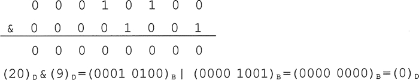
即：20&9=0。
应用一：使用 0x01 与一个数按位与，可获取该数对应二进制数的最低位。
应用二：使用 0x00 与一个数按位与，可使该数低位的一个字节清零。
例如，9&0x1 可求得 9 对应二进制数 0000 1001 的最低位 1。
【例 1】分析以下程序的功能，并输出其运行结果。
2 4 6 8 10 12 14 16 18 20
程序分析：
n&0x1 的功能是取出 n 对应补码二进制数的最低位（最右端位），如果该位为 0，则输出。二进制数 bn-1bn-2bn-3…b2b1b0。对应的十进制数 N 的表达式为：
例如，计算 20 和 9 按位或的结果，如下所示。
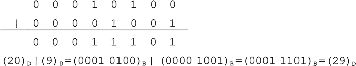
即: 20 | 9 = 29。
复合赋值运算符：
例如，计算 22 和 7 按位异或的结果，如下所示。
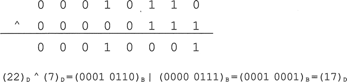
即：22^7=17。
【例 2】分析以下程序的功能。
a=5,b=3
程序分析：
本题是对按位异或的性质和特点的综合运用，由于没有使用中间变量，故在理解上存在一定的难度。
由于 a=a^b; 故：
b=a^b=a^b^b=a^(b^b)=a^0=a，即：b=3。
a=a^b=(a^b)^a=(b^a)^a=b^(a^a)=b^0=b，即：a=5。
故实现了 a 与 b 的交换。
复合赋值运算符：
例如，计算 10 左移两位的结果，如下所示。
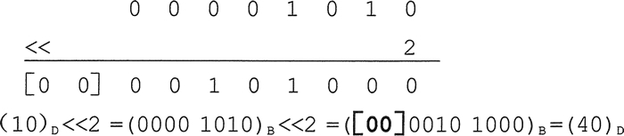
丢弃左边高位移出去的 0，低位补 0。
左移一位相当于该数乘以 2，本例中左移两位，故相当于乘以 4。即：10<<2 = 10 X 2 X 2 = 40。
复合赋值运算符：
例如，计算 70 右移两位的结果，如下所示。
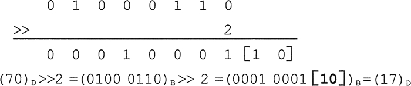
丢弃右边移出去的所有位，由于该数为正数，左边补 0。
右移一位相当于该数除以 2 取整，本例中右移两位，故相当于除以 4 取整。即：70>>2=70/4 = 17。
例如，计算 10 按位取反的结果，如下所示：
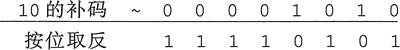
由于计算机中位运算均是以补码形式操作的，正数的补码是其本身，负数的补码为其反码加 1。
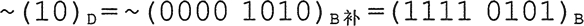
所得显然是负数的补码，对补码 1111 0101 再做一次求补操作，即可得该补码对应的原码。 求 1111 0101 补码的过程如下所示。
原码、反码和补码
位（bit）是计算机中处理数据的最小单位，其取值只能是 0 或 1。字节（Byte）是计算机处理数据的基本单位，通常系统中一个字节为 8 位。即:1 Byte=8 bit。
为便于演示，本节表示的原码、反码及补码均默认为 8 位。
准确地说，数据在计算机中是以其补码形式存储和运算的。在介绍补码之前，先了解原码和反码的概念。
正数的原码、反码、补码均相同。
原码：用最高位表示符号位，其余位表示数值位的编码称为原码。其中，正数的符号位为 0，负数的符号位为 1。
负数的反码：把原码的符号位保持不变，数值位逐位取反，即可得原码的反码。
负数的补码：在反码的基础上加 1 即得该原码的补码。
例如：
+11 的原码为: 0000 1011
+11 的反码为: 0000 1011
+11 的补码为: 0000 1011
-7 的原码为：1000 0111
-7 的反码为：1111 1000
-7 的补码为：1111 1001
注意，对补码再求一次补码操作就可得该补码对应的原码。
位操作符
语言中提供了 6 个基本的位操作符，如表 2 所示。| 运算符 | 功 能 | 运算规则 |
|---|---|---|
| & | 按位与 | 对应位均为 1 时，结果才为 1 |
| | | 按位或 |
两位中只要有一位为 1，结果为 1。 只有两位同时为 0 时，结果为才为 0。 |
| ^ | 按位异或 | 两位相异时，结果为 1;两位相同时，结果为 0。 |
| << | 左移 | 将运算数的各二进制位均左移若干位，高位丢弃（不包括 1），低位补 0，每左移一位，相当于该数乘以 2。 |
| >> | 右移 | 将运算数的各二进制位均右移若干位，正数补左补 0，负数左补 1，右边移出的位丢弃。 |
| ~ | 按位取反 | 0 变 1,1 变 0。 |
注意，计算机中位运算操作，均是以二进制补码形式进行的。
按位与（&）
只有两位同时为 1 时，结果才为 1；只要两位中有一位为 0，则结果为 0。用式子表示为：
0 & 0 = 0
0 & 1 = 0
1 & 0 = 0
1 & 1 = 1
&= 表示按位与后赋值。例如，计算 20 和 9 按位与的结果，如下所示。
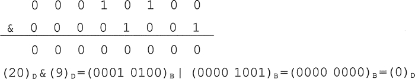
即：20&9=0。
应用一：使用 0x01 与一个数按位与，可获取该数对应二进制数的最低位。
应用二：使用 0x00 与一个数按位与，可使该数低位的一个字节清零。
例如，9&0x1 可求得 9 对应二进制数 0000 1001 的最低位 1。
【例 1】分析以下程序的功能，并输出其运行结果。
#include<stdio.h>
int main (void)
{
int n;
for(n=1;n<=20;n++)
if (0==(n&0x1))
printf("%d ",n);
printf ("\n");
return 0;
}
程序运行结果为：2 4 6 8 10 12 14 16 18 20
程序分析：
n&0x1 的功能是取出 n 对应补码二进制数的最低位（最右端位），如果该位为 0，则输出。二进制数 bn-1bn-2bn-3…b2b1b0。对应的十进制数 N 的表达式为：
N=b0 X 20 + b1 X 21 + b2 X 22 + b3 X 23 + b4 X 24 + …
由于从上式中第二项开始的每一项都是偶数，故N是否偶数取决于 b0 是否偶数，故 b0 为 1 时是奇数，为 0 时是偶数。按位或（丨）
只要两位中有一位为 1，结果为 1；只有两位同时为 0 时，结果才为 0。用式子表示为：
0 | 0 = 0
0 | 1 = 1
1 | 0 = 1
1 | 1 = 1
|= 按位或后赋值。例如，计算 20 和 9 按位或的结果，如下所示。
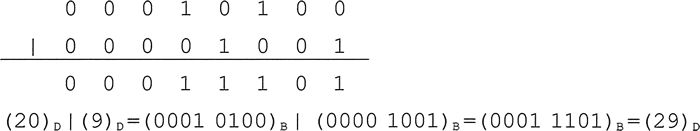
即: 20 | 9 = 29。
按位异或（^）
当两位相同时，即同为 1 或同为 0 时，结果为 0；当两位相异时，即其中一位为 1，另一位为 0 时，结果为 1。即相同为 0，相异为 1。用式子表示为：
0 ^ 0 = 0
0 ^ 1 = 1
1 ^ 0 = 1
1 ^ 1 = 0
- a^0=a。即0与任意数按位异或都得该数本身。
- 1 与任意二进制位按位异或都得该位取反（0 变 1，1 变 0）。
- a^a=0。即任意数与自身按位异或都得0。
- a^b=b^a。即满足交换律。
- (a^b)^c=a^(b^c)。即满足结合律。
- a^b^b=a^(b^b)=a^0=a。
复合赋值运算符：
^= 按位异或后赋值。例如，计算 22 和 7 按位异或的结果，如下所示。
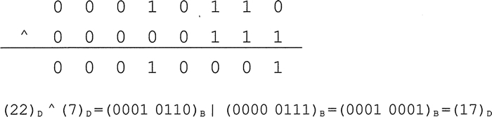
即：22^7=17。
【例 2】分析以下程序的功能。
#include<stdio.h>
int main (void)
{
int a=3,b=5;
a=a^b;
b=a^b;
a=a^b;
printf("a=%d,b=%d\n",a,b);
return 0;
}
运行结果：a=5,b=3
程序分析：
本题是对按位异或的性质和特点的综合运用，由于没有使用中间变量，故在理解上存在一定的难度。
由于 a=a^b; 故：
b=a^b=a^b^b=a^(b^b)=a^0=a，即：b=3。
a=a^b=(a^b)^a=(b^a)^a=b^(a^a)=b^0=b，即：a=5。
故实现了 a 与 b 的交换。
左移（<<)
将运算数的各二进制位均左移若干位，高位丢弃（不包含 1），低位补 0。左移时舍弃的高位不包含 1，则每左移一位，相当于该数乘以 2。复合赋值运算符：
<<= 左移后赋值。例如，计算 10 左移两位的结果，如下所示。
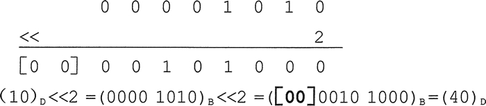
丢弃左边高位移出去的 0，低位补 0。
左移一位相当于该数乘以 2，本例中左移两位，故相当于乘以 4。即：10<<2 = 10 X 2 X 2 = 40。
右移（>>）
将运算数的各二进制位全部右移若干位，正数左补 0，负数左补 1，右边移出的位丢弃。复合赋值运算符：
>>= 右移后赋值。例如，计算 70 右移两位的结果，如下所示。
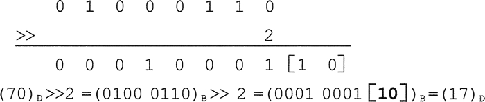
丢弃右边移出去的所有位，由于该数为正数，左边补 0。
右移一位相当于该数除以 2 取整，本例中右移两位，故相当于除以 4 取整。即：70>>2=70/4 = 17。
按位取反（~）
0 变 1,1 变 0。用式子表示为：
~0 = 1
~1 = 0
例如，计算 10 按位取反的结果，如下所示：
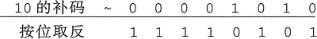
由于计算机中位运算均是以补码形式操作的，正数的补码是其本身，负数的补码为其反码加 1。
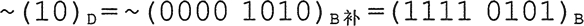
所得显然是负数的补码，对补码 1111 0101 再做一次求补操作，即可得该补码对应的原码。 求 1111 0101 补码的过程如下所示。
反码 1000 1010 --符号位 1 保持不变，数值位按位取反
补码 1000 1011 --反码加1
根据 (补码)补码=原码
故补码1111 0101对应的原码为1000 1011=-11，即:~(10)D =~(0100 0110)B补= (1111 0101)B补=-11
关注公众号「站长严长生」，在手机上阅读所有教程，随时随地都能学习。内含一款搜索神器，免费下载全网书籍和视频。

微信扫码关注公众号